M75 W-1: areas as filled bands, labels clear of the axis and controls
Copilot answer chart
Copilot answer chart ("Read the SENSEX chart"), nearest area placed at the bottom of the chart, where Auto / Reset sit.
| Check | Before | After |
|---|---|---|
| Area drawn as | 2 dashed price lines | 1 filled translucent band (seller / buyer colour from the chart tokens) |
| "Area top" / "Area bottom" on the price axis | 2 axis tags, covering the scale | 0 |
| Area label vs Auto / Reset | under the controls | clear (placer avoids the controls' box) |
| Charts tab "Read this chart" areas | not drawn until the next pan / tick (layer set while the chart was idle) | drawn at once, filled, labelled "Seller area / Buyer area · TF · state" |
| Same drawing everywhere | - | bandShapes / placeBandLabels serve every band layer (Copilot, Charts reading, market zones, price action, evidence, cone) |
Phone 390 - light
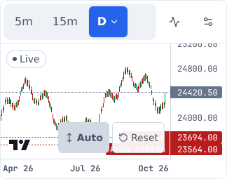

Phone 390 - dark
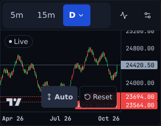
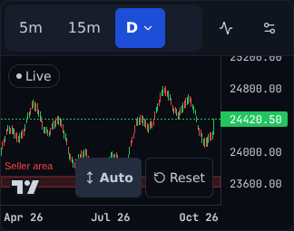
Desktop 1440 - light
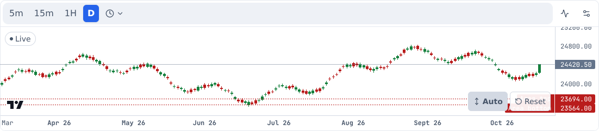
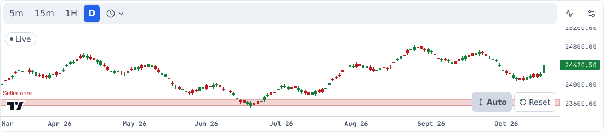
Desktop 1440 - dark
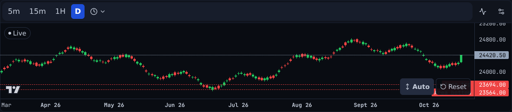
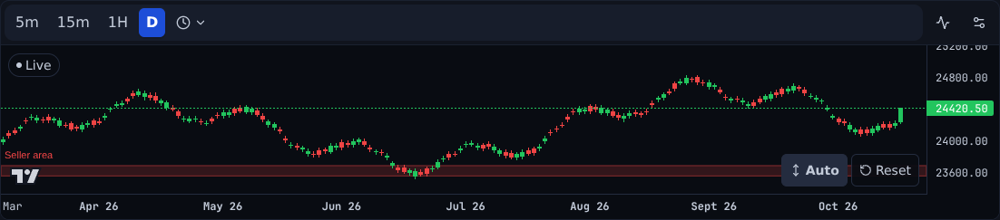
Charts tab - "Read this chart" (seller + buyer areas; the lowest one runs under Auto / Reset)
Made-up reading (e2e/chartsMocks.ts READING_WITH_AREAS). Before: the reading's areas never showed - the band layer
was attached without a repaint, so with no tick or pan nothing was painted. After: filled bands; labels inside the pane, off the
price axis, clear of the controls (the lowest label moves just above Auto / Reset on the phone).
Phone 390 - light
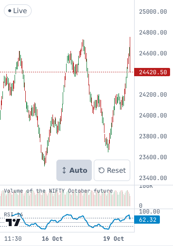

Phone 390 - dark
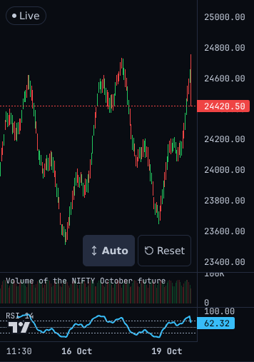

Desktop 1440 - light
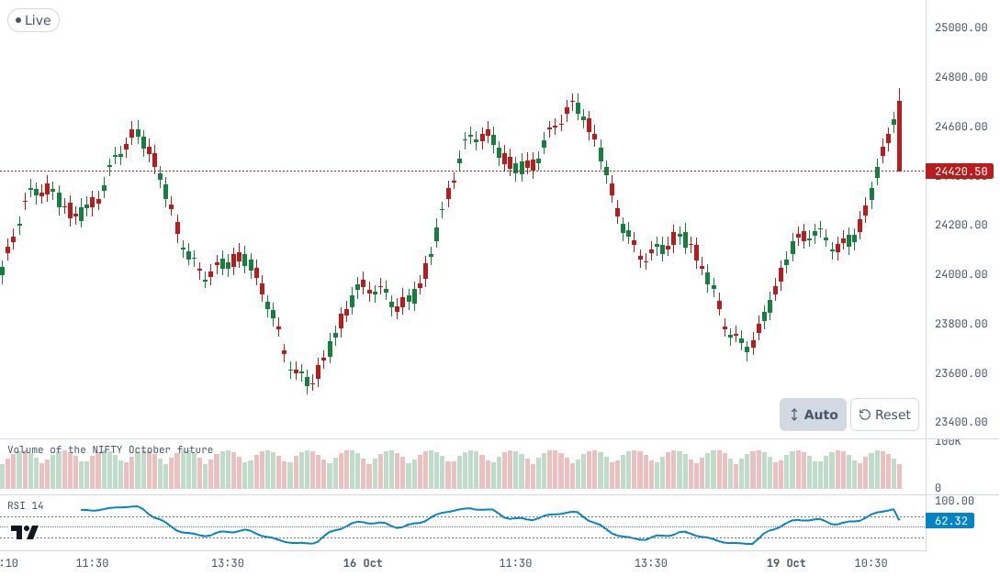

Desktop 1440 - dark
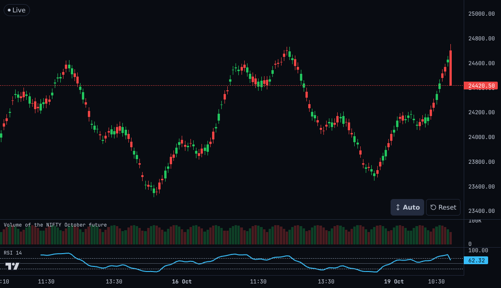
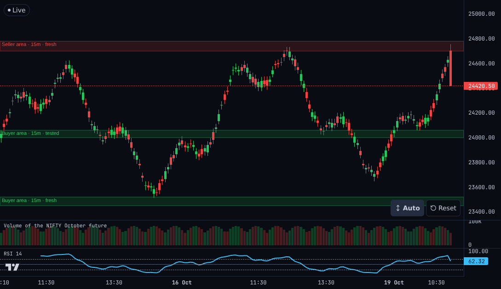
How labels are placed
- Spots tried in order: inside the band (top-left), on a thin band's own line, just above, just below, just above / below a control box sitting on the band (within 28 px); then the same at the right; then just left of each reserved box.
- Reserved boxes: the view controls (Auto / Reset / Latest), the Live chip, the price-line legend, the chart's attribution mark - measured from the page after each render and on resize.
- Labels stay inside the price pane, so they never reach the price axis; a label with no free spot is left out (the band stays).
- Shots: e2e/m75w1-capture-v2.e2e.ts (capture-only, never in CI), against builds of main and of this branch.
- Unit test: src/charting/bandLabels.test.ts (phone and desktop panes, 14 stacked bands, label boxes vs controls / axis / each other).